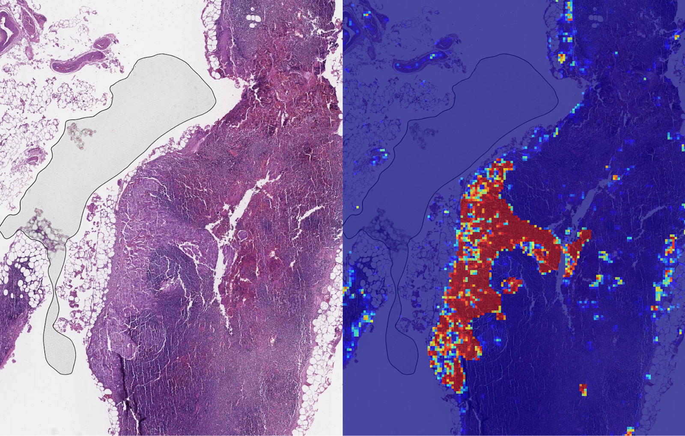
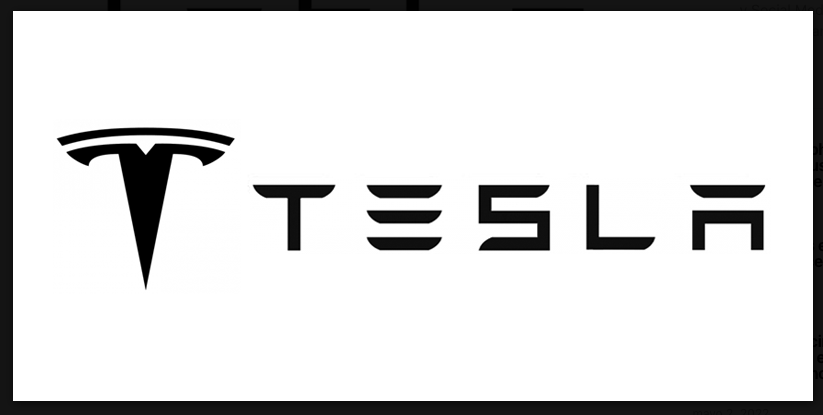
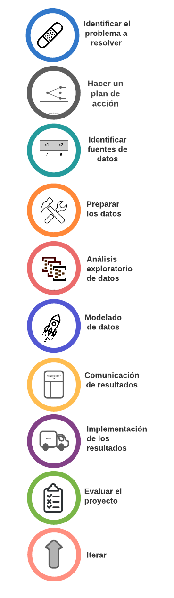

1 Estadística en la ciencia de datos
La estadística es una rama de las matemáticas aplicadas que implica la recopilación, descripción, análisis e inferencia de conclusiones a partir de datos. Para hacer esto la estadística utiliza la teoría de la probabilidad.
La idea es que podemos aprender sobre las propiedades de grandes conjuntos de objetos o eventos (a las que llamamos población). Debido a que en muchos casos recopilar los datos completos sobre una población completa es demasiado costoso, difícil o imposible, las estadísticas comienzan estudiando un número menor de objetos o eventos que es un subconjunto de la población (al que llamamos muestra).
Un científico de datos analiza y comunica el valor de los datos

Cuando el científico de datos trabaja dentro de una empresa, el objetivo es generalmente facilitar la mejora de los procesos de toma de decisiones. Desde Google Analytics hasta las encuestas de clientes, la mayoría de las empresas tendrán al menos una fuente de datos de clientes que se está recopilando. Pero si no se usan bien, los datos no son útiles. La importancia de la ciencia de datos se basa en la capacidad de usar los datos para generar conocimientos útiles.
El término “Ciencia de datos” surgió recientemente, pero dar sentido a los datos tiene una larga historia y ha sido discutido por científicos, estadísticos, bibliotecarios, informáticos y otros durante años.
La ciencia de datos antes se llamaba análisis de datos.
La estadística es parte de la ciencia de datos.
El análisis de los datos puede empezar desde una simple búsqueda en internet, sin embargo, contestar una pregunta específica con los datos puede ser tan difícil como generar la inspiración acerca de qué preguntas hacer en primer lugar. Los científicos de datos necesitan saber estadística y saber programar, pero también necesitan capacidad para comunicar sus resultados, curiosidad, persistencia y un agudo sentido de lo que sus líderes encontrarán significante.
1.0.1 La ciencia de datos en los negocios
Los científicos de datos han cambiado casi todas las industrias. Veamos algunas aplicaciones impresionantes de la ciencia de datos.
1.0.1.1 LYNA (Lymph Node Assistant)
Identifica tumores de cáncer de mama. Esto puede ser difícil de ver para el ojo humano, especialmente cuando el crecimiento del nuevo cáncer es pequeño. En un ensayo, LYNA, identificó con precisión el cáncer el 99% de las veces utilizando su algoritmo de aprendizaje automático.

1.0.1.2 Netflix
Más del 80% de series y películas que la gente ve en Netflix se descubre a través del sistema de recomendación de la plataforma.

El sistema de recomendación funciona juntando datos recopilados de diferentes lugares, las filas recomendadas se adaptan a sus hábitos de visualización. Los sistemas como Netflix basados en el aprendizaje automático se reescriben a sí mismos a medida que aprenden de sus propios usuarios. Cada vez que presionas reproducir y pasas tiempo viendo un programa, Netflix recopila datos que informan al algoritmo y lo actualizan. Cuanto más veas, más actualizado estará el algoritmo.
1.0.1.3 Tesla

La opción de conducción autónoma total de Tesla incluye cambios de carril automáticos, estacionamiento en paralelo y una función para que tu coche te deje, se estacione y luego te recoja. También incluyen control automático de semáforos y señales de alto.
El software de conducción autónoma de Tesla ha sido entrenado en base a 3 mil millones de millas conducidas por vehículos Tesla, hasta abril de 2020. Además de decenas de millones de millas de entrenamiento en el mundo real, los competidores han entrenado su software en decenas de miles de millones de millas en simulaciones por computadora. Musk argumenta que las millas simuladas no pueden capturar la “rareza” del mundo real y, por lo tanto, no son suficientes para entrenar el software.
1.0.1.4 Otras aplicaciones
Mitigar el riesgo y el fraude. Con metodologías estadísticas identificar datos que se destacan de alguna manera y crear alertas que garabticen respuestas oportunas cuando se reconocen datos inusuales.
Entrega de productos relevantes. Las organizaciones pueden encontrar cuándo y dónde se venden mejor sus productos, ésto puede ayudar a entregar los productos correctos en el momento adecuado y a desarrollar nuevos productos para satisfacer las necesidades de los clientes.
Experiencias personalizadas del cliente. Uno de los beneficios más destacados de la ciencia de datos es la capacidad de los equipos de ventas y marketing para comprender a su audiencia a un nivel muy granular. Con este conocimiento, una organización puede crear las mejores experiencias de cliente posibles, recomendar contenido o personalizar oferta de productos, por ejemplo, generar cupones en el punto de venta en función de los hábitos de compra del cliente
Mejora de productos. Medir efectos de cambios técnicos, conceptuales o estéticos en productos establecidos.
Monitorear y optimizar procesos internos. Determinación de las causas de fallas, logística, infraestructura web, productos de datos internos, ventas, precios, finanzas y transacciones.
Cálculo de carteras de riesgo
Identificación y predicción de enfermedades. Recomendaciones de salud personalizadas
Optimización de rutas de envío
En todos esos casos, el trabajo del científico de datos está en primer lugar definido por un conocimiento del dominio, más que por técnicas específicas de cómputo o estadística, los científicos de datos cultivan conocimiento detallado y profundo del campo para ser exitosos. El tomador de decisiones juega un papel importante para orientar a que las preguntas y soluciones de los científicos de datos estén alineadas a las necesidades y objetivos de la organización, pues usualmente es un mejor experto en el campo específico de aplicación y tiene un contexto más amplio acerca de las implicaciones de hallazgos o dificultades.
1.0.2 Flujo de trabajo de un proyecto
Un proyecto de ciencia de datos pasa por varias etapas que requieren la participación de distintas partes, para cualquier organización que trabaje con datos, es conveniente tener un flujo de trabajo bien definido, que garantize que los diferentes equipos de la organización permanezcan sincronizados.
La siguiente imágen muestra un posible flujo de trabajo. El orden entre las etapas es el orden razonable que se seguiría dentro de un proyecto, sin embargo, el flujo no es lineal, es decir, no hay flechas entre las etapas, enfatizando que la dirección entre ellas no es fija; a medida que avanza el proyecto, es posible que se tengan que volver a visitar las etapas anteriores para incluir datos adicionales, limpiar problemas de datos recién descubiertos u otros elementos.

1.1 La estadística en la ciencia de datos
Nos enfocaremos en las etapas del flujo de trabajo en las que los científicos de datos usan principalmente la estadística.
Identificar fuentes de datos: En ocasiones las fuentes de datos que ya están disponibles (por ejemplo datos históricos de ventas o cuestionarios que haya realizado la empresa) pueden servir para contestar la pregunta en cuestión. Otras veces es necesaria la recolección de nuevos datos. Esto puede incluir datos de otras empresas competidoras, datos abiertos demográficos o algún estudio específico que se requiera realizar para contestar la pregunta en cuestión. El recolectar datos algunas veces implicará diseñar una muestra que sea representativa de la población, los diseños muestrales se hacen utilizando métodos estadísticos. Más aún, para entender cualquier fuente de datos es importante entender el procedimeinto en el que se recolectó o el diseño muestral en su caso.
Preparar los datos: Preparar los datos se enfoca en limpiarlos para que puedan ser utilizados. Para grandes conjuntos de datos, el muestreo estadístico puede acelerar enormemente el procesamiento y la exploración que se requiere para hacer la limpieza. En este paso, también se utiliza la estadística para el tratamiento de datos faltantes. Por distintas causas las bases de datos pueden contener datos faltantes, y muchas técnicas de modelado no pueden manejar los datos faltantes, por lo que si falta parte de una observación, se debe decidir si eliminarla por completo o hacer una imputación. La imputación se puede realizar con algún método estadístico para extrapolar las observaciones faltantes utilizando el resto de observaciones. Por último, los datos tienden a ser sucios, a veces debido a errores humanos, por lo que las bases de datos deben de explorarse en busca de posibles errores antes de utilizarse. Algunas medidas estadísticas pueden ayudar en éstas búsquedas.
Análisis exploratorio de datos: Una vez que tenemos todos los datos necesarios para el proyecto, se pueden utilizar métodos estadísticos exploratorios para exponer cualquier relación en los datos. Este paso se centra en encontrar anomalías, patrones y relaciones. Esto ayudará a descubrir información que se puede utilizar para responder a la pregunta de investigación planteada.
Modelado de datos: Después de explorar los datos, el científico de datos debe de seleccionar el mejor modelo para el proyecto. El objetivo del modelado es representar el comportamiento general de la población bajo estudio, teniendo en cuenta la pregunta que se desea responder. La elección de un modelo estadístico no es sencilla, puede estar íntimamente ligada a la pregunta específica que se está investigando, también puede guiarse por la forma de las relaciones entre las variables que se descubrieron en el análisis exploratorio o por el campo de especialidad de quién realiza el análisis. Usualmente, los científicos de datos elegirán un conjunto de modelos con los cuales correrán el análisis para al final decidir cuál es el que mejor se ajusta a los datos. Todos los modelos tendrán cierta incertidumbre, es trabajo del científico de datos cuantificar la incertidumbre restante en cada tipo de análisis, de manera que se tome en cuenta adecuadamente al momento de tomar decisiones. Todo esto es estadístico, los modelos, la cuantificación de la incertidumbre, incluso los métodos de selección de un modelo entre un conjunto de ellos.
Comunicación de resultados: El objetivo de un análisis es articular la información detrás de los valores y proporcionar una recomendación procesable. Esta etapa parece simple; sin embargo, puede ser un gran desafío. Comunicar los resultados requiere un cuidadoso equilibrio de comunicación, psicología, estadística y diseño para poder entregar información valiosa.
1.1.1 Conclusiones
El entendimiento de la estadística es sumamente importante para el científico de datos. Incluso si el área de especialidad del científico de datos es más enfocada a la computación, siempre será una buena idea el tener un entendimeinto general de cómo otras partes del flujo de trabajo están funcionando.
Los datos + la estadística no son iguales a la objetividad.
1.2 Referencias
PwC. (2018). Data and analytics.
Kozyrkov C. (2020). Do you make decisions rationally?